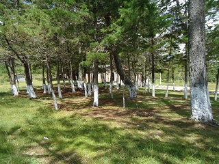
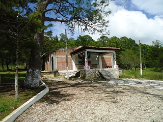
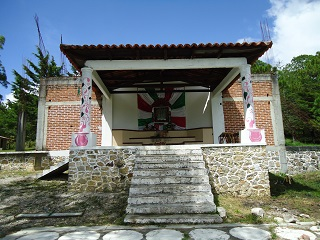
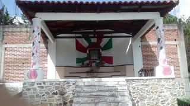
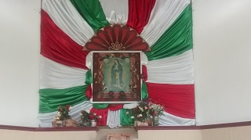

Es un lugar religioso, comúnmente visitado en el mes de diciembre, por las festividades y tradiciones religiosas. Tiene una capilla en honor a la sma. Virgen de Guadalupe, y en sus alrededores cuenta con bonitos lugares bajo sombra de árboles de ocote.
Últimamente debido al descuido por parte de los encargados y de la propia ciudadanía, se encuentra un poco desolado y es un punto de reunión para ritos y actividades no bien vistas por la sociedad, así como tambien en algunos puntos se ha convertido en un basurero.
Se ubica a las afueras de Jitotol, camino al cerro el calvario. Se localiza a 5 minutos del centro de la cabecera, y es de fácil acceso.
Se puede tomar como referencia el parque central, y caminar con dirección al poniente hasta topar con la última calle, y después girar a mano izquierda, en donde se verá una calle en diagonal, esta está empedrada, y seguir alrededor de 1 km.
En el lugar usted puede practicar actividades como:





posicione el mouse o de click sobre las imágenes
{kind=link}
{kind=link}
{kind=link}
{kind=link}
{kind=link}